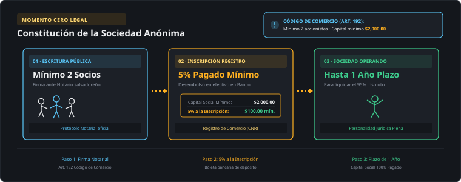
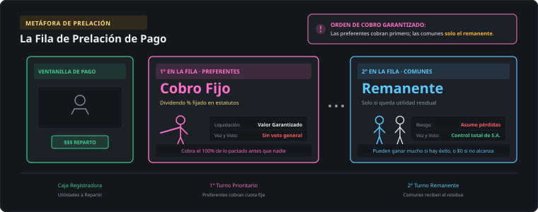
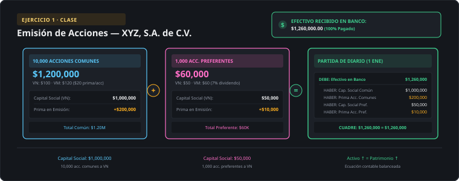
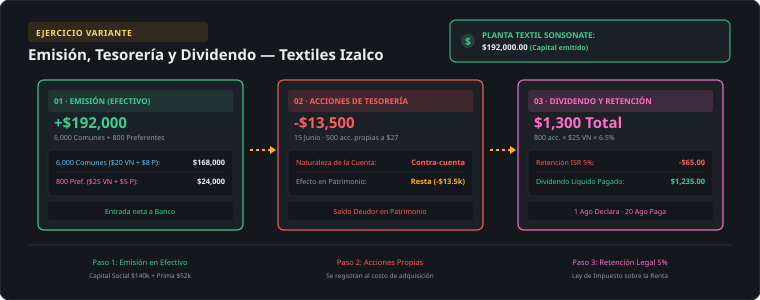

El ciclo de una transacción de capital
Definición simple: una transacción de capital es cualquier movimiento de dinero entre la empresa y sus dueños (los accionistas) — nunca entre la empresa y un cliente o un proveedor. Por eso jamás genera una venta, un gasto ni una utilidad: cambia directamente el Patrimonio.
Ejemplo salvadoreño: cuando XYZ, S.A. de C.V. emite acciones nuevas y recibe $1,260,000 en efectivo de sus accionistas, ese dinero no es una venta — es capital que los dueños aportan a cambio de un título de propiedad. Cuando meses después esa misma empresa declara un dividendo, tampoco es un gasto — es la devolución de una parte de las utilidades que ya eran de los accionistas.
Concepto formal: desde que se constituye una Sociedad Anónima hasta que reparte utilidades, el capital pasa por cinco momentos. Cada uno afecta una sección distinta del Patrimonio, pero ninguno pasa por el Estado de Resultados.
Profundización teórica — ¿por qué el capital nunca pasa por el Estado de Resultados?
La ecuación contable fundamental es Activo = Pasivo + Patrimonio. El Patrimonio crece de solo dos formas: (1) los dueños aportan más capital, o (2) la empresa genera utilidades que decide no repartir (utilidades retenidas). Una transacción de capital siempre es la primera vía — un movimiento directo entre la empresa y sus propios dueños — por eso se contabiliza directo en una cuenta de Patrimonio, sin pasar nunca por Ingresos ni Gastos.
Esto conecta con la Unidad 1 (Planillas): el gasto de sueldos sí reduce el Patrimonio, pero lo hace indirectamente, vía el resultado del período (Ingresos − Gastos = Utilidad, que se acumula en Utilidades Retenidas). Una emisión de acciones, en cambio, aumenta el Patrimonio directamente — nunca pasa por una cuenta de Ingreso. Confundir estas dos rutas es el error conceptual más común de esta unidad.
Formación de la Sociedad Anónima
Antes de que exista una acción para emitir, tiene que existir la sociedad. El Código de Comercio de El Salvador fija cuatro requisitos mínimos para constituir una Sociedad Anónima — y de ahí nace el primer momento de capital contribuido.
Ninguna acción puede venderse por debajo de su valor nominal, y todas deben ser nominativas (a nombre de una persona identificada, nunca "al portador") — así el Registro de Comercio siempre sabe quién es dueño de qué.

Tres conceptos clave
Capital contable = contribuido + ganado
El capital contribuido son los aportes de los socios (capital social + prima en venta de acciones + donaciones). El capital ganado son las utilidades retenidas (o pérdidas acumuladas) generadas por la operación.
Comunes vs. preferentes
Las comunes dan voto pleno y dividendo variable. Las preferentes tienen dividendo fijo (mín. 6% del valor nominal) con prelación de pago, pero voto limitado — solo en juntas extraordinarias, salvo que se les adeuden dividendos por más de 3 ejercicios.
Cuatro valores de una acción
Nominal (valor de emisión), de mercado (precio de compraventa), de liquidación (garantizado a preferentes si se liquida la empresa) y en libros (capital contable ÷ acciones en circulación).
Comunes y preferentes lado a lado
| Característica | Acciones comunes | Acciones preferentes |
|---|---|---|
| Cuenta contable | Patrimonio Capital común | Patrimonio Capital preferente |
| Voto | Pleno, en toda junta | Limitado (solo extraordinarias), salvo atraso > 3 ejercicios |
| Dividendo | Variable, en dólares por acción | Fijo, mín. 6% del valor nominal, con prelación |
| En liquidación | Reciben el remanente | Se reembolsan primero |
| Ejemplo (guía, Ejercicio 1) | XYZ, S.A. de C.V. — 10,000 acc., VN $100, VM $120 | XYZ, S.A. de C.V. — 1,000 acc., VN $50, VM $60, dividendo 7% |
¿Por qué existe una clase de acción "preferente" si vota menos? Es un intercambio: el inversionista renuncia a influir en las decisiones de la empresa a cambio de cobrar primero y de forma predecible. Por eso a las preferentes también se les llama capital híbrido — se parecen a una acción (son Patrimonio, no Pasivo) pero se comportan como una deuda de tasa fija en el momento de cobrar.

Los cuatro valores de una acción
La palabra "valor" cambia de significado según quién la use — el Registro de Comercio, la bolsa, o el propio Balance General. Distinguir los cuatro evita el error más común del Ejercicio 2 (valor en libros).
Panorama: tres momentos en la vida del capital
No todas las transacciones de capital se registran igual. Agruparlas por momento ayuda a recordar qué cuenta se mueve en cada una.
1. Emisión (entra capital)
Activo ↑ (Efectivo) y Patrimonio ↑ (Capital social + Prima). Es la única transacción de capital que trae dinero nuevo a la empresa.
2. Operación (mueve el capital)
Dividendos: nace un Pasivo temporal entre la declaración y el pago. Tesorería: contra-cuenta de Patrimonio. Split: ningún asiento — solo cambia la cantidad y el VN de las acciones.
3. Reporte (sale al Balance)
Todo termina en la sección de Patrimonio del Balance General: capital contribuido, capital ganado y, si aplica, la resta de las acciones de tesorería.
Marco Legal
Código de Comercio de El Salvador (normativa societaria): la Sociedad Anónima requiere un capital social mínimo de USD $2,000, con al menos el 5% pagado al momento de la inscripción y el resto dentro del año siguiente; mínimo 2 accionistas, sin máximo. Las acciones deben ser nominativas, de valor nominal mínimo de $1 o múltiplos enteros de uno, y no pueden venderse por debajo de su valor nominal.
Ley del Impuesto sobre la Renta: los dividendos pagados a personas naturales están gravados con una retención del 5%, que debe retener quien paga el dividendo; si no se retiene, el contribuyente debe liquidar el impuesto por separado de sus otras rentas.
El PDF de la profesora no especifica números de artículo del Código de Comercio para esta unidad — se cita en términos generales, tal como indican las reglas de precisión legal del curso.
Cobertura en evaluaciones
- Esta semana no hay Control — el Control 1 es hasta el jueves 10 de septiembre y cubre Impuesto sobre la Renta (Unidad 3).
- El Caso 1 (entrega sábado 6 de septiembre) es en realidad un caso de Planillas (Unidad 1) — no evalúa Transacciones de Capital. Si necesitas repasar planillas, aguinaldo o liquidaciones, revisa el material de la Unidad 1.
- Transacciones de Capital sí entra en el Parcial 1 (semana 6).
Glosario
- Capital contribuido
- Aportes de los socios: capital social + prima en venta de acciones + donaciones.
- Capital ganado
- Utilidades retenidas (o pérdidas acumuladas) generadas por la operación, no aportadas por los socios.
- Prelación de pago
- Orden en que se paga a cada clase de acción; las preferentes cobran antes que las comunes.
- Capital social
- Valor nominal total de las acciones emitidas y suscritas por los socios.
- Prima en venta de acciones
- Monto pagado por arriba del valor nominal («capital pagado en exceso del valor nominal»).
- Capital contable
- Derecho de los propietarios sobre los activos netos; capital contribuido + capital ganado.
- Acción común
- Título que da voto pleno y dividendo variable.
- Acción preferente
- Título con dividendo fijo y prelación de pago, voto limitado.
- Valor nominal
- Valor de la acción al momento de emitirse.
- Valor de mercado
- Precio al que se compra o vende una acción.
- Valor de liquidación
- Monto garantizado a las acciones preferentes si la empresa se liquida.
- Valor en libros
- Capital contable atribuido a una clase de acciones ÷ acciones en circulación de esa clase.
- Dividendo
- Distribución de utilidades retenidas a los accionistas, generalmente en efectivo.
- Acciones de tesorería
- Acciones propias readquiridas por la empresa; contra-cuenta de Patrimonio con saldo deudor.
- Split de acciones
- Reduce el valor nominal y aumenta proporcionalmente la cantidad de acciones; no genera asiento contable.
- Capital variable (C.V.)
- Régimen que permite aumentar o disminuir el capital sin escritura pública, solo con registro en el libro correspondiente.
Emisión de acciones — XYZ, S.A. de C.V.
Ejercicio exacto de la guía de la profesora (Ejercicios clase acciones.pdf). El 1 de enero de 2024, XYZ, S.A. de C.V. emite 10,000 acciones comunes (VN $100, VM $120) y 1,000 acciones preferentes (VN $50, VM $60, dividendo 7%), pagadas totalmente en efectivo. Antes de la emisión, XYZ ya tenía 12,000 acciones comunes (VN $100 = $1,200,000) y utilidades retenidas de $200,000.

a) Capital social de la emisión, a valor nominal
Cada clase de acción aporta dos componentes: el valor nominal (capital social) y la prima (diferencia contra el valor de mercado). Se calculan por separado.
| Capital preferente: 1,000 acc. × $50 VN | $50,000 |
| Prima preferente: 1,000 acc. × ($60 − $50) | $10,000 |
| Capital común: 10,000 acc. × $100 VN | $1,000,000 |
| Prima común: 10,000 acc. × ($120 − $100) | $200,000 |
| Total capital social emitido (= efectivo recibido) | $1,260,000 |
b) Partida de diario — 1 de enero de 2024
Se abona cada cuenta de capital por separado — nunca se mezcla el valor nominal con la prima en una sola cuenta, porque el Balance General las reporta como líneas distintas.
| Fecha | Cuenta | Debe | Haber |
|---|---|---|---|
| 01-ene-24 | Efectivo | 1,260,000 | |
| Capital preferente | 50,000 | ||
| Capital pagado en exceso del valor nominal: preferente | 10,000 | ||
| Capital común | 1,000,000 | ||
| Capital pagado en exceso del valor nominal: común | 200,000 | ||
| Emisión de acciones preferentes y comunes con prima, pagada en efectivo | |||
c) Patrimonio después de la emisión
El capital común existente (12,000 acc.) se suma a las 10,000 acciones nuevas: 22,000 acciones comunes en total a valor nominal. Las utilidades retenidas no cambian — una emisión de acciones nunca las afecta.
| XYZ, S.A. de C.V. — Capital contable de los accionistas — al 31 de enero de 2024 | |
|---|---|
| Capital preferente: valor nominal $50; 1,000 acciones | $50,000 |
| Capital pagado en exceso del valor nominal: preferente | $10,000 |
| Capital común: valor nominal $100; 22,000 acciones emitidas | $2,200,000 |
| Capital pagado en exceso del valor nominal: común | $200,000 |
| Capital social pagado (subtotal) | $2,460,000 |
| Utilidades retenidas | $200,000 |
| Patrimonio o Capital Contable total | $2,660,000 |
Errores comunes
- Registrar el efectivo recibido directamente en la cuenta de Capital, sin separar el valor nominal de la prima — la prima siempre va en su propia cuenta («capital pagado en exceso del valor nominal»).
- Calcular el dividendo preferente sobre el valor de mercado en vez del valor nominal — el 6-7% siempre se aplica sobre el valor nominal.
- Sumar las acciones nuevas y existentes sin fijarse si tienen el mismo valor nominal — aquí las 12,000 previas y las 10,000 nuevas comparten VN $100, por eso se suman en una sola línea.
- Olvidar que la prima no es utilidad — nunca pasa por la cuenta de resultados, va directo a una cuenta de Patrimonio.
Valor en libros por acción — ABC, S.A. de C.V.
Ejemplo de la diapositiva 24 de la profesora: calcular el valor en libros por acción preferente y por acción común de ABC, S.A. de C.V., considerando 1 año de dividendos preferentes atrasados.
| ABC, S.A. de C.V. — Capital contable al 1 de diciembre | |
|---|---|
| Capital preferente: VN $50; 1,000 acciones | $50,000 |
| Capital común: VN $1; 1,000,000 acciones | $1,000,000 |
| Prima común | $19,000,000 |
| Utilidades retenidas | $9,000,000 |
| Patrimonio o Capital Contable total | $29,050,000 |
Valor en libros atribuido a preferentes
= capital preferente + dividendos atrasados. Un año atrasado: $50,000 × 6% = $3,000.
$50,000 + $3,000 = $53,000 → $53,000 ÷ 1,000 acciones = $53.00 por acción preferente
Valor en libros atribuido a comunes
Los accionistas comunes reciben lo que queda del Patrimonio después de apartar lo de las preferentes.
$29,050,000 − $53,000 = $28,997,000 → ÷ 1,000,000 acciones = $28.997 por acción común
Acciones de tesorería — ABC, S.A. de C.V.
Ejercicio exacto de la guía: ABC compra, y luego revende, sus propias acciones.
A) 31 de marzo — compra de 1,000 acciones de tesorería a $5
Las acciones de tesorería se registran al costo, nunca a su valor nominal — es una cuenta contraria de Patrimonio, con saldo deudor.
| Fecha | Cuenta | Debe | Haber |
|---|---|---|---|
| 31-mar | Acciones de tesorería (1,000 × $5) | 5,000 | |
| Efectivo | 5,000 | ||
| Compra de acciones de tesorería | |||
B) 2 de abril — vende 200 acciones a $6 (arriba del costo de $5)
La diferencia a favor ($1 × 200 = $200) no es utilidad — nunca pasa por resultados. Va a una cuenta de Patrimonio: «Capital pagado proveniente de transacciones con acciones de tesorería».
| Fecha | Cuenta | Debe | Haber |
|---|---|---|---|
| 02-abr | Efectivo (200 × $6) | 1,200 | |
| Acciones de tesorería (200 × $5) | 1,000 | ||
| Capital pagado — transacciones con tesorería | 200 | ||
| Venta de acciones de tesorería arriba del costo | |||
C) 3 de abril — vende 400 acciones a $4.40 (bajo el costo de $5)
La pérdida total es de $0.60 × 400 = $240. Primero se agota el saldo disponible de «Capital pagado — transacciones con tesorería» que dejó la venta anterior ($200); el resto ($40) se carga contra Utilidades Retenidas — nunca contra gastos del período.
| Fecha | Cuenta | Debe | Haber |
|---|---|---|---|
| 03-abr | Efectivo (400 × $4.40) | 1,760 | |
| Capital pagado — transacciones con tesorería (agotado) | 200 | ||
| Utilidades retenidas (déficit remanente) | 40 | ||
| Acciones de tesorería (400 × $5) | 2,000 | ||
| Venta de acciones de tesorería bajo el costo | |||
D) Patrimonio y acciones de tesorería remanentes
De las 1,000 acciones compradas, se vendieron 200 + 400 = 600; quedan 400 acciones en tesorería (a su costo de $5 = $2,000), que se restan al final del Patrimonio. Las cifras de capital preferente/común de esta tabla provienen de la hoja de solución de la profesora (Ejercicios Acc Tesoreria.xlsx) — no aparecen en el enunciado del PDF, por eso se citan aparte.
| ABC, S.A. de C.V. — Capital contable (cifras de la hoja de solución de la profesora) | |
|---|---|
| Capital preferente, 6%, VN $50; 2,000 acciones | $100,000 |
| Prima preferente | $5,000 |
| Capital común, VN $0.50; 6,300,000 acciones | $3,150,000 |
| Prima común | $23,900,000 |
| Capital pagado total | $27,155,000 |
| Utilidades retenidas (neto del déficit de $40 en la venta bajo costo) | se reduce en $40 |
| (−) Acciones de tesorería, al costo (400 × $5) | ($2,000) |
Declaración y pago de dividendo preferente — DEF, S.A. de C.V.
Ejercicio de la diapositiva 31 de la guía de la profesora. DEF, S.A. de C.V. tiene 2,000 acciones preferentes en circulación, valor nominal $50, dividendo preferente del 6%. La Junta declara el dividendo el 1 de mayo y lo paga el 30 de mayo, con la retención de ISR del 5% que exige el marco legal de esta unidad.
a) Dividendo total declarado
El dividendo preferente se calcula siempre sobre el valor nominal, nunca sobre el valor de mercado — es la misma regla que en el Ejercicio 1.
2,000 acciones × $50 VN × 6% = $6,000
b) Partida de declaración — 1 de mayo
En la fecha de declaración nace la obligación legal de pagar — aquí, y solo aquí, se reconoce el pasivo, aunque el efectivo todavía no salga.
| Fecha | Cuenta | Debe | Haber |
|---|---|---|---|
| 01-may | Utilidades retenidas | 6,000 | |
| Dividendos por pagar | 6,000 | ||
| Declaración de dividendo preferente en efectivo | |||
c) Partida de pago — 30 de mayo
Al pagar, se retiene el 5% de ISR (Ley del Impuesto sobre la Renta) — ese monto no sale de la empresa hacia el accionista, sino que se convierte en un nuevo pasivo a favor del Ministerio de Hacienda.
| Fecha | Cuenta | Debe | Haber |
|---|---|---|---|
| 30-may | Dividendos por pagar | 6,000 | |
| Retenciones por pagar ISR (5%) | 300 | ||
| Efectivo | 5,700 | ||
| Pago del dividendo preferente, neto de la retención de ISR | |||
Errores comunes
- Reconocer el pasivo en la fecha de pago en vez de la fecha de declaración — el pasivo nace cuando la Junta lo declara, no cuando sale el efectivo.
- Olvidar la retención de ISR del 5% y pagar los $6,000 completos al accionista.
- Cargar el dividendo contra una cuenta de gasto — un dividendo nunca es gasto, siempre se carga contra Utilidades retenidas.
- Calcular el 6% sobre el capital pagado total (VN + prima) en vez de sobre el valor nominal únicamente.
Glosario
- Capital pagado en exceso del valor nominal
- También llamado prima; monto pagado por arriba del valor nominal de la acción.
- Acciones en circulación
- Acciones emitidas menos acciones en tesorería; solo ellas tienen voto y dividendo.
- Capital pagado — transacciones con tesorería
- Cuenta de Patrimonio que absorbe la ganancia (o parte de la pérdida) al revender acciones de tesorería.
- Dividendos atrasados
- Dividendos preferentes no declarados en ejercicios anteriores; no son un pasivo hasta que la Junta los declara.
- Costo (acciones de tesorería)
- Precio al que la empresa recompró sus propias acciones; base de registro contable.
- Fecha de declaración
- Momento en que la Junta aprueba el dividendo y nace el pasivo "Dividendos por pagar".
- Fecha de pago
- Momento en que se liquida el pasivo del dividendo, reteniendo el ISR correspondiente.
- Retenciones por pagar ISR
- Pasivo a favor del Ministerio de Hacienda por el 5% retenido sobre el dividendo pagado.
Las 8 hojas del libro
Cómo se enlazan las hojas
El archivo nunca repite un número escrito a mano — cada hoja resuelta jala sus cifras de la hoja anterior con una fórmula. Si cambias el valor de mercado en la Hoja 3, el asiento de la Hoja 5 y el Balance de la Hoja 7 se recalculan solos.
Por eso las instrucciones del curso prohíben pegar valores calculados a mano en el Excel: si el número está "quemado" (hardcodeado), la cadena se rompe y ya no se puede auditar de dónde salió cada cifra.
Cómo usar el archivo
Empieza en la Hoja 1 — Inicio
Escribe tu nombre completo, carnet y fecha de entrega. Lee el código de honor antes de continuar.
Revisa la Hoja 2 — Marco Normativo
Las cifras oficiales (capital mínimo, % de dividendo preferente, % de ISR sobre dividendos) ya están ahí, tomadas del PDF de la clase — no las cambies.
Estudia la Hoja 3 — Cálculo Emisión (resuelta)
Reproduce el Ejercicio 1 de la guía con fórmulas encadenadas: cambia el valor nominal o de mercado en las celdas azules y observa cómo se recalcula todo.
Practica en la Hoja 4 — Cálculo Práctica
Mismas columnas, celdas en rosa para completar tú. Usa las fórmulas de la Hoja 3 como referencia, no las copies literalmente.
Sigue el libro diario en las Hojas 5-6
Cada partida en la Hoja 5 está enlazada por fórmula a la Hoja 3 — si cambias un dato de entrada, el asiento se actualiza solo.
Compara tu resultado con la Hoja 7 — Producto Final
Es la sección de Patrimonio del Balance General ya armada; practica el mismo formato en la Hoja 8 con tus propios números.
Código de Honor
«Por mi honor y ante mis compañeros, me comprometo a que esta actividad académica refleje mi verdadero nivel de conocimientos, evitando realizar cualquier forma de deshonestidad académica (por ejemplo, copiar o plagiar).»
Glosario de funciones de Excel usadas
- =SUMA()
- Suma un rango de celdas — usada para totalizar capital social y Patrimonio.
- =SI()
- Evalúa una condición — usada para decidir si el dividendo total alcanza a cubrir a las preferentes antes de repartir a comunes.
- =SUMAR.SI()
- Suma condicionalmente — usada para acumular dividendos preferentes atrasados por año.
- Paneles inmovilizados
- La fila de encabezados queda fija al desplazarte por cada hoja.
Textiles Izalco, S.A. de C.V.
Empresa textil salvadoreña (sector maquila, Sonsonate). El 1 de marzo de 2026 realiza una emisión de acciones pagada totalmente en efectivo. Antes de la emisión tenía 8,000 acciones comunes (VN $20 = $160,000) y utilidades retenidas de $95,000.
| Tipo de acción | Cantidad | Valor nominal | Valor de mercado | Dividendo preferente |
|---|---|---|---|---|
| Comunes | 6,000 | $20 | $28 | — |
| Preferentes | 800 | $25 | $30 | 6.5% |
a) Calcula el capital social de la emisión a valor nominal y la prima de cada clase. b) Realiza la partida de diario. c) Presenta el Patrimonio después de la emisión. d) El 15 de junio, Textiles Izalco compra 500 acciones propias de tesorería a $27 cada una — registra el asiento. e) El 1 de agosto, la Junta declara el dividendo preferente anual (sobre las 800 acciones, 6.5% del valor nominal) y lo paga el 20 de agosto reteniendo el ISR del 5% — registra ambas partidas.

| a) Capital social a valor nominal | |
|---|---|
| Capital preferente: 800 × $25 | $20,000 |
| Prima preferente: 800 × ($30 − $25) | $4,000 |
| Capital común: 6,000 × $20 | $120,000 |
| Prima común: 6,000 × ($28 − $20) | $48,000 |
| Total emitido (= efectivo recibido) | $192,000 |
| b) Partida de diario — 1 de marzo de 2026 | |||
|---|---|---|---|
| 01-mar-26 | Efectivo | 192,000 | |
| Capital preferente | 20,000 | ||
| Capital pagado en exceso: preferente | 4,000 | ||
| Capital común | 120,000 | ||
| Capital pagado en exceso: común | 48,000 | ||
| Emisión de acciones preferentes y comunes con prima | |||
| c) Patrimonio después de la emisión | |
|---|---|
| Capital preferente: VN $25; 800 acciones | $20,000 |
| Capital pagado en exceso: preferente | $4,000 |
| Capital común: VN $20; 14,000 acciones (8,000 previas + 6,000 nuevas) | $280,000 |
| Capital pagado en exceso: común | $48,000 |
| Capital social pagado (subtotal) | $352,000 |
| Utilidades retenidas | $95,000 |
| Patrimonio o Capital Contable total | $447,000 |
| d) Compra de acciones de tesorería — 15 de junio de 2026 | |||
|---|---|---|---|
| 15-jun-26 | Acciones de tesorería (500 × $27) | 13,500 | |
| Efectivo | 13,500 | ||
| Compra de acciones propias, registradas al costo | |||
| e) Dividendo preferente — cálculo | |
|---|---|
| 800 acciones × $25 VN × 6.5% | $1,300 |
| e) Declaración — 1 de agosto de 2026 | |||
|---|---|---|---|
| 01-ago-26 | Utilidades retenidas | 1,300 | |
| Dividendos por pagar | 1,300 | ||
| Declaración de dividendo preferente en efectivo | |||
| e) Pago — 20 de agosto de 2026 | |||
|---|---|---|---|
| 20-ago-26 | Dividendos por pagar | 1,300 | |
| Retenciones por pagar ISR (5%) | 65 | ||
| Efectivo | 1,235 | ||
| Pago del dividendo preferente, neto de ISR | |||
Glosario
- Sector maquila
- Industria de ensamblaje/confección para exportación, relevante en la economía salvadoreña.
- Emisión pagada en efectivo
- Toda la contraprestación de las acciones se recibe en dinero, sin activos ni servicios de por medio.
- Capital preferente
- Registra el valor nominal de las acciones preferentes emitidas.
- Registro al costo
- Las acciones de tesorería siempre se contabilizan al precio pagado por recomprarlas, no a su valor nominal.
- Dividendo preferente
- Distribución fija, calculada como % del valor nominal, con prelación de pago sobre las comunes.
- Declaración vs. pago
- Dos fechas distintas: el pasivo nace al declararse; se liquida y se retiene el ISR al pagarse.